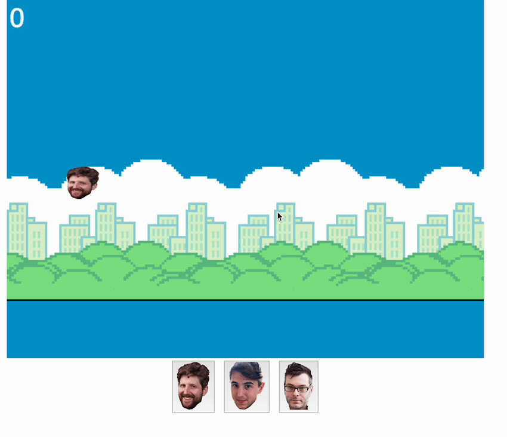

We gaan een eigen versie van flappy bird maken
We gaan kunnen kiezen uit verschillende characters en proberen een
zo hoog mogelijke scoren te halen

Daarvoor hebben we drie codetalen nodig
Geen paniek, we houden de code eenvoudig, maar maken wel iets
superinteractief!
STAP 1 - MAPPEN EN BESTANDEN
Dit is de mappenstructuur en de nodige bestanden die je gaat
nodig hebben voor het project vloeiend te laten verlopen
De foto's zijn verkrijgbaar op onze github voor de mensen die
willen:
Github.
Je kan altijd eigen images gebruiken maar zorg ervoor dat de
namen hetzelfde zijn als in de structuur hieronder.
-
index.html
-
js (folder)
-
css (folder)
-
assets (folder)
-
imgs (folder)
-
bg.png
-
bottomPillar.png
-
character_1_happy.png
-
character_1_sad.png
-
character_2_happy.png
-
character_2_sad.png
-
character_3_happy.png
-
character_3_sad.png
-
topPillar.png
-
sounds (folder)
- GREAT SUCCESS
STAP 2 - HTML & CSS
Tijd om te coderen, zodat we meer te zien krijgen dan een
witte webpagina!
-
2.1 Begin door je index.html de startcode
te geven. Je doet dit door "!" te typen en dan enter te
drukken. Of je kopieert de onderstaande code.
Dit is een basis-structuur waarin we verder werken.
-
2.2 Voeg nu een canvas toe, we hebben dit
nodig om grafisch te kunnen tekenen op de webpagina.
Zet dit tussen de tussen de body tags
-
2.3 Voeg audio tags toe met het juiste pad
naar je mp3 files die je wil gebruiken.
-
2.4 Als laatste, voeg de selectie knoppen
toe voor de karakters onder de canvas.
-
2.5 Kopieer onderstaande code in jouw
main.css-bestand. Bewaar vervolgens dat
bestand.
Dit bevat alvast een aantal basisstijlen die we later zullen
nodig hebben voor de look & feel van onze app.
-
2.6 Bekijk het resultaat in de browser (de
url is hoogstwaarschijnlijk:
http://127.0.0.1:5500/ als je met de live server extensie werkt).
Als alles goed is, ziet het er nu zo uit. Een gekleurd vak
met knoppen onder met normaal de juiste foto's / characters
in de knoppen.
Als dit niet het geval is controleer dan zeker dat je de
images hebt en ze de juiste naam hebt gegeven.
-
2.7 Laten we het eens van kleur veranderen.
Hiervoor moeten we de kleurwaarde veranderen. Zoek naar
background-color: cornflowerblue; en verander
cornflowerblue; naar bijvoorbeeld
tomato; De achtergrond is nu tomaatkleurig.
STAP 3 - INTERACTIVITEIT MET JAVASCRIPT
hello world
-
3.1 Eerst en vooral moeten we de link
leggen naar het JavaScript-bestand.
Voeg deze regel code toe, onderaan net voor de
sluitings-body-tag.
<script
src="./js/main.js"></script>
-
3.2 Ga naar het bestand
main.js en zet er het volgende in:
Dit is om alle variabelen te declareren die we gaan nodig
hebben voor de rest van het project
-
3.3 Nu voegen we een functie toe die de
nodige variabelen waarden gaat geven en ze inladen.
-
3.4 Vervolgens gaan we de update functie
toevoegen.
Dit is een vrij lange functie. De nodige info staat altijd
bij de code bij voor extra informatie.
Wat deze functie gaat doen is kijken bij elke update dat er
gebeurd (als er op een knop geduwd wordt om te springen) of
het character iet heeft geraakt of niet.
Als dit zo is gaat hij de variabele gameOver op
true zetten.
Als hij niets geraakt heeft dan gaat er een geluid worden
afgespeeld.
-
3.5 De toren plaatsende functie.
Deze functie gaat de torens plaatsen op een willekeurige
plaats en de juiste afstand van elkaar.
-
3.6 De volgende functie is om de character
te laten bewegen.
Hier gaan we eerst en vooral de knoppen die gebruikt gaan
worden om te springen bevestigen.
We gaan in deze functie ook de hoogte van het springen
bevestigen met de velocity en de rotatie van het character
toevoegen zodat hij een vallend effect heeft.
Op het einde van de functie zetten we ook een reset zodat je
het spel opnieuw kan starten door een van de gekozen knoppen
in te duwen. De reset zorgt ervoor dat de geluiden worden
herstart en dat het character op de begin positie wordt
geplaatst.
-
3.7 Dit is de laatste functie. De bedoeling
is om te detecteren wanneer je een pillaar raakt.